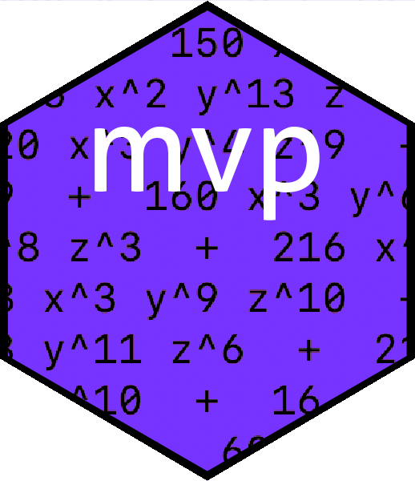

Overview 
Multivariate polynomials are interesting and useful objects. Here I present the mvp package which hopefully improves upon previous R functionality provided by the packages multipol, mpoly, and spray. The mvp package follows mpoly in using a symbolic, rather than numeric, representation of a multivariate polynomial; but it offers speed advantages over mpoly. mvp uses the excellent print and coercion methods of the mpoly package. mvp includes some pleasing substitution idiom not found elsewhere; it is theoretically comparable in speed to the spray package and I present some timings in the package vignette.
The mvp package uses C++’s STL map class for efficiency, which has the downside that the order of the terms, and the order of the symbols within each term, is undefined. This does not matter as the mathematical value of a multivariate polynomial is unaffected by reordering; and the print method (taken from mpoly) does a good job in producing human-readable output.
Installation
You can install the released version of mvp from CRAN with:
The mvp package in use
Creating a multivariate polynomial is straightforward:
X <- as.mvp("1 + a^2 + a*b*c^3")
X
#> mvp object algebraically equal to
#> 1 + a b c^3 + a^2and arithmetic operations work as expected:
Y <- as.mvp("12*a^2 + b - c^2 + 4*d")
X+Y
#> mvp object algebraically equal to
#> 1 + a b c^3 + 13 a^2 + b - c^2 + 4 d
X-3*Y
#> mvp object algebraically equal to
#> 1 + a b c^3 - 35 a^2 - 3 b + 3 c^2 - 12 d
X^2
#> mvp object algebraically equal to
#> 1 + 2 a b c^3 + 2 a^2 + a^2 b^2 c^6 + 2 a^3 b c^3 + a^4Substitution uses the subs() function:
X
#> mvp object algebraically equal to
#> 1 + a b c^3 + a^2
subs(X,a=1)
#> mvp object algebraically equal to
#> 2 + b c^3
subs(X,a=1,b=2)
#> mvp object algebraically equal to
#> 2 + 2 c^3
subs(X,a=1,b=2,c=3)
#> [1] 56
subs(X+Y,a="1+x^2",b="x+y",c=0)
#> mvp object algebraically equal to
#> 14 + 4 d + x + 26 x^2 + 13 x^4 + y